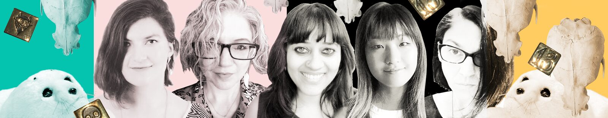
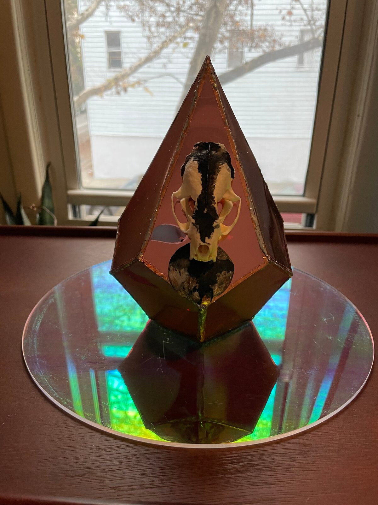
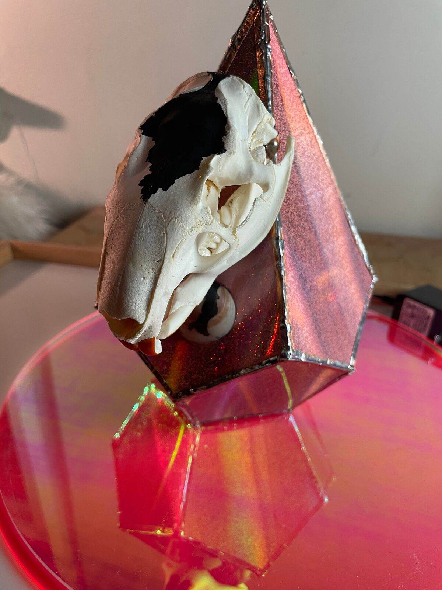

The Seals International Debut
PROJECT DESCRIPTION
We are a political, feminist, noise and AI inspired electronic sorta-surf rock band composed of Meg, Sofy, Sophia, Ria, Susia, and the SEAL (Synthetic Erudition Assist Lattice) AIs (the collection of AIs that assist us in creating usable content with which to mold and shape our music and visuals). We begin by invoking one another through zoom and play skull theremins while reading GPT2 & GPT3 (Machine Learning) generated dialogue. We performed our SEAL Holiday Special on Dec 13 2020 via Zoom hosted by NYU’s First Performance Series.
Visuals are made by Ria and Sofy using U^2-Net Results from https://github.com/NathanUA/U-2-Net along with the MOG2 OpenCV library to simulate the object detection in our Seal Vision, as well as VDMX for color correction and the god rays filter taking into account how seals see. We are pulling from live aquarium webcam feeds at the Monterey Bay Aquarium and the California Academy of Sciences and processing them with our modeling of Seal Vision.
We are located in Brooklyn, NY, Setauket, NY, Miami, FL, San Diego, CA, and Pune, India.
The lyrics are organized from conversations we had with GPT-3 by OpenAI, the most powerful language model to date. Drum patterns are generated with the help of the machine learning tool Magenta Suite. The backing Ambient audio was generated with Jukebox, the only (as far as we know) machine learning model that generates wav files to date. We then laced melodies and rhythms to those words. During the performance, we incorporated chance into the music by playing custom Theremins made with conductive paint according to dice rolls. Zoom audio delays were at the heart of the performance, where we talk over one another, sing or speak in failed synchronization. Through these elements, we highlight the cyborg nature of contemporary beings, the technology-mediated human experience during a global pandemic, and the delicate relationship between the ghost and the machine.
PROGRAM NOTES
Our program begins before it begins with the amalgamation & transmutation of assets offered up by the S.E.A.L. We five, through shared words, golden dice & a prism of frequency, invoke one another to activate a portal of boxes within boxes. We are observed & connected across lay/latency lines, stitching together a tapestry of sight & sound...and for 35 minutes life is less lonely for these ghosts in the machine. We create an experience that transcends the academic contexts in which we are trained with a more punk aesthetic with a real beat. The performance swerves between the avant-garde and a Bond-theme song for a movie set in the ocean of the future. To increase our telepresence we each have an identical golden rotten luck die that we roll to determine playing our identical custom made theremins and performance techniques including barks, tonal honks, grunts, growls, roars, moans, and pup contact calls. Our improvisation is asynchronous; we’re in different timezones with zoom lags, no single stream of the performance was the same for any viewer or performer, beautifully isolated experiences in this interconnected world. We’ll never know exactly what anyone experiences each in their own Covid bubbles.
PERFORMANCE REQUIREMENTS
If we are performing through zoom—we have no requirements.
If travel is permitted and one or more of us can come to NIME, we would like to perform on stage and will require a projector, a screen, power, wifi, and a speaker system to perform. It would be very interesting to have at least of us at NIME zooming the concert with the others, simultaneously allowing for a beautiful live performance with a custom built theremin, and an experience harkening back to lockdown days and the social realities of that time.
Finally the mixed in person/telematic nature of the performance would speak well to sustainability and accessibility for the conference. Burning so much jet fuel to bring performers from all over the world is still an unsustainable practice, and costly, and thereby inaccessible to all. Having a mixed presence performance would reflect well on the goals of accessibility and sustainability set at NIME 2019, before the lockdown. In an ideal world this would be the performance we would give.
Wifi Connection
Projection Screen
Projector
Speaker System
AC power
MEDIA
NIME 2021 Music Submission—Seals Anonymized Holiday Special Performance


NIME 2021 Music Submission - A picture of the Seals


NIME 2021 Music Submission — Close Up of One Theremin


NIME 2021 Music Submission — Close Up of Second Theremin
ACKNOWLEDGEMENTS
Gene Kogan for letting us use his GPT3 License
This work is supported by NYU First Performance Club